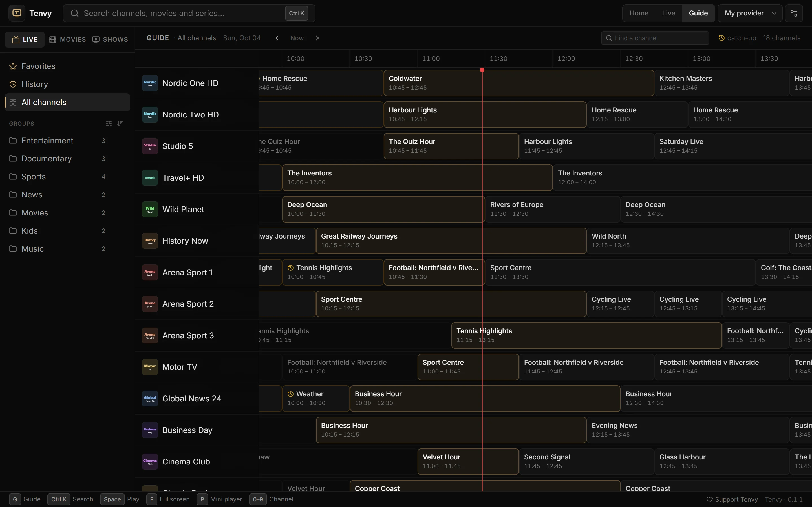

An M3U player for Windows, with a real TV guide
VLC can open an M3U playlist, but it gives you a long list and nothing else. Tenvy turns the same playlist into live TV with categories, a programme guide, favorites and channel numbers.

How to play an M3U playlist
- Install Tenvy from the Microsoft Store (or the installer).
- Paste your playlist link (
http://…/playlist.m3uor.m3u8) on the first screen. A path to a.m3ufile on your PC works too. - Your channels appear grouped by category. Pick one and you're watching.
The guide comes along
Most playlists name their guide in the first line (url-tvg="…"); Tenvy loads it in the background. If yours doesn't, add the guide's XMLTV link under Settings → Add → XMLTV guide. Channels are matched to the guide by their tvg-id, and by name when that's missing.
Got an Xtream link?
If your M3U link looks like …/get.php?username=…&password=…, it comes from an Xtream Codes panel. Tenvy notices and switches to the panel's own login automatically, which adds series with seasons, film posters, catch-up and account details.
More than a playlist
- Favorites in your own order, hidden channels and categories
- Channel numbers and zapping with the keyboard
- Audio and subtitle tracks, picture shape, sleep timer
- Reconnects by itself when a stream drops
Try Tenvy — it's free
Free. No ads, no account. Windows 10 and 11.
Questions
Does Tenvy support M3U8?
Yes, M3U and M3U8 playlists, including HLS streams.
Is there a channel limit?
No. Playlists with tens of thousands of channels, films and episodes load fine.
Does Tenvy come with a playlist?
No. Tenvy is a player only; you use a playlist from a service you have the right to watch.